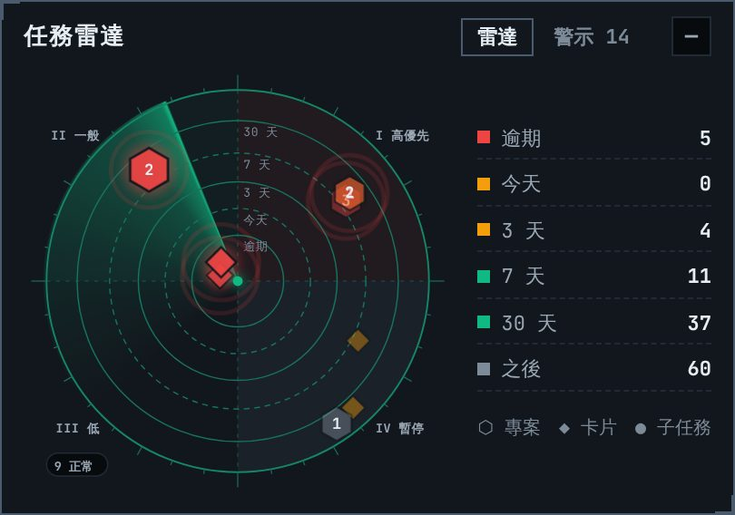
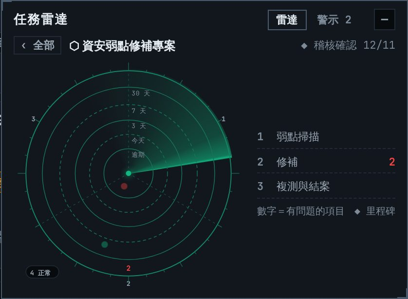
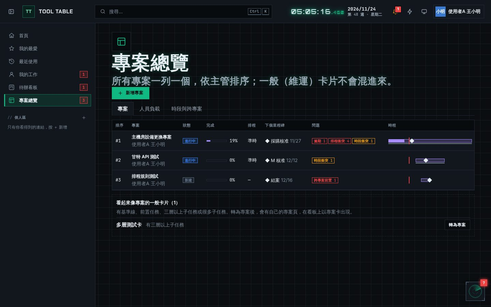
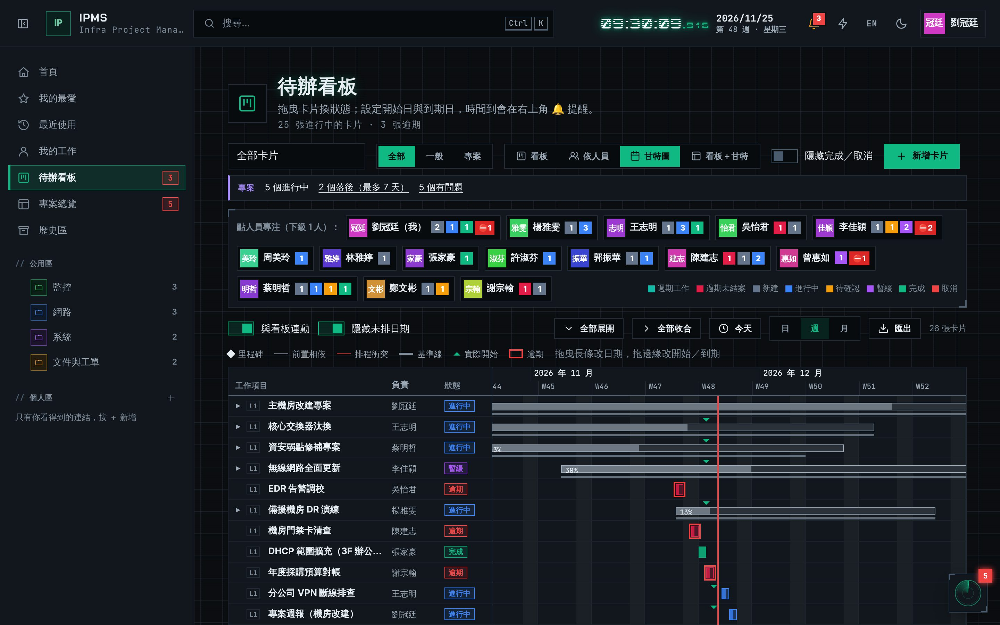
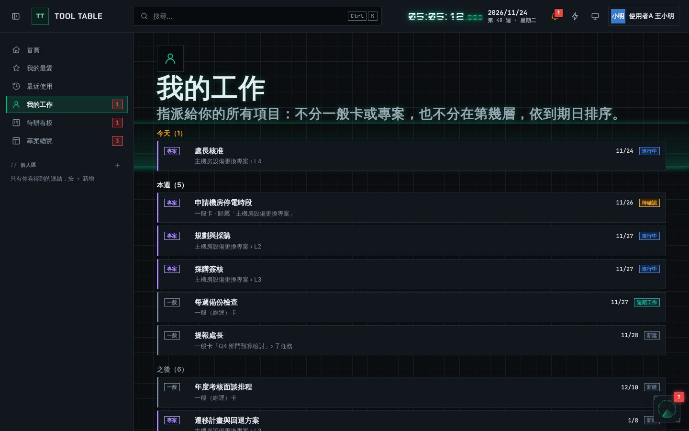

維運工作和每個專案，
一個畫面看完。
IPMS 把部門的連結入口、每天的維運待辦、跨好幾個月的專案放在同一套系統。專案和維運分開管理，但落後、卡住、互相搶時段的地方，一打開就看得到。

分開管理，不用切來切去找問題
卡片分「一般（維運）」與「專案」。看板上方用「全部／一般／專案」切換顯示，但專案的警示永遠留在摘要列：幾個進行中、幾個落後、本週有哪些里程碑。
- 專案卡顯示完成度、相對基準線落後幾天、下個里程碑與問題數，點一下開啟專案頁
- 專案期間的採購單、停機申請這類一般卡，可以歸屬到專案，一起出現在專案的甘特圖
- 我的工作：所有專案與一般卡裡指派給我的項目，依逾期、今天、3 天內、本週分組

待辦看板 · 專案摘要列：3 個進行中、3 個有問題、本週里程碑 採購核准 11/27
五個專案、上百項工作，雷達上只剩要處理的幾個點
每個頁面右下角都有雷達。越靠近中心越緊急；正常的項目合成一個「N 正常」，畫面不會被光點塞滿。每個專案是一個六角形，點進去用扇區看各個階段。

全部：專案是六角形
位置看下個里程碑多近，顏色看健康度，數字是有問題的項目數。

專案雷達：扇區是階段
右邊列出每個階段的問題數，點光點直接在任務視窗展開到那一層。

警示清單
依類型篩選、只看我的，人員超載也在這裡。
專案之間會互相卡住，所以要看得到彼此
同一批人同時跑好幾個專案，問題常常不在單一專案裡，而在專案之間：同一週被排滿、同一個停電時段被兩個專案搶、前置工作在別的專案延誤了。

里程碑、前置任務、基準線
看板可以切成甘特圖，或上面看板、下面甘特。開「與看板連動」時跟著看板的篩選；關掉就是獨立的甘特圖。
- 拖曳長條改日期、拖兩端改開始或到期；有後續工作時會詢問是否一起順延
- 基準線：存下原定日期，之後每一項都看得到延誤或提前幾天
- 有子任務的項目，日期自動等於底下的範圍；比前置任務早開始會標成排程衝突

該做的事會自己找上門

我的工作
跨所有專案與一般卡，指派給我的項目依逾期、今天、3 天內、本週、之後排好。每一項標出來自哪個專案、在第幾層。

專案通知
每個專案自己選：全部、只跟我有關、每日摘要或關閉。每天送出落後基準線、跨專案前置延誤、時段衝突、3 天內到期的里程碑；同一件事只通知一次。
不在公司網路裡，照樣能用
伺服器版給整個部門共用，用 AD 帳號登入。Windows 單機版在外面也能新增、修改、計時、附檔，連上伺服器後自動同步回去，兩邊功能完全相同。
- 逐欄位合併：兩邊改了同一張卡的不同欄位，兩邊的修改都保留；改到同一欄位時以較新的為準，並列入衝突紀錄
- 以 python.org 官方簽章的 python.exe 執行，套件裡沒有自製的執行檔，不會被公司防毒誤判
- 只讀取 AD 的帳號與上級資料，從不寫回 AD
入口網站、Excel 報告、API

連結入口與管理後台
資料夾、連結、首頁版面、配色都在後台調整，不用改程式。拖曳網址直接新增，自動抓網站圖示；每個人還有自己的個人區。

Excel 報告與 API
給長官看的工作進度報告一鍵匯出，含專案總覽、人員負載、問題清單；改完可以匯入。所有功能都有 API，文件用 Swagger UI，可以直接試。
兩種裝法，資料可以互通
伺服器版
全新的 Debian 12/13 或 Ubuntu 22.04/24.04，一行指令裝好 nginx、HTTPS、systemd 服務與每日備份。
curl -fsSL https://raw.githubusercontent.com/nox913106/net-tool-table/main/scripts/bootstrap.sh | sudo bash
裝好後用瀏覽器開 https://<主機>，在後台設定 AD。詳細步驟見 INSTALL.md。
Windows 單機版
不需要系統管理員權限，也不需要安裝 Python。升級時直接執行新版，資料會保留。
下載 IPMS-Setup.exe免安裝版：下載 IPMS-windows-x64.zip，解壓縮後點兩下 IPMS.cmd。要連伺服器時，按頁首的同步標記輸入網址與 AD 帳號。